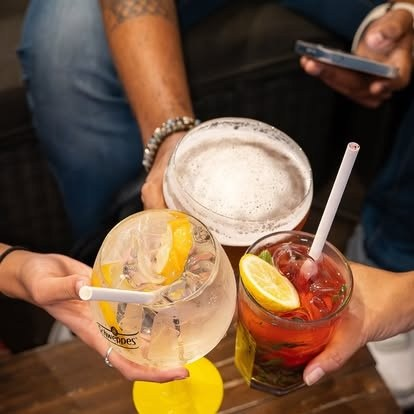
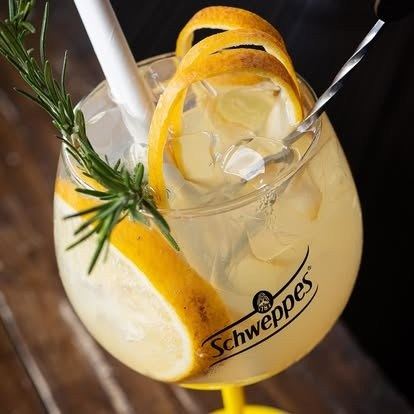
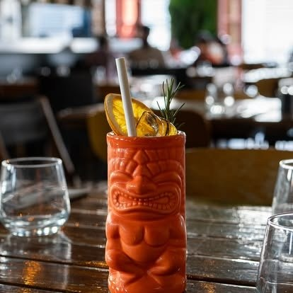

Faux-filet 300 g
Halal, sauce foie gras.
32 €
Produits frais, cocktails et soirées sous la grande charpente, du déjeuner au soir.
Suggestions du moment, renouvelées régulièrement et sous réserve de disponibilité.
Halal, sauce foie gras.
32 €
Crémeux au combava, crevettes, moules, Saint-Jacques.
26 €
Zourite en dés, une portion grillée et une portion croustillante, crémeux d'avocat, mayonnaise chimichurri, salsa de tomates, figues et poivrons.
17 €
Salade, tomates, oignons, bœuf ou poulet, sauce tomate sucrée-salée, boucané de volaille halal, piton Maïdo.
24 €
Salade verte, mix de choux, carottes, billes de mozzarella, dés de melon, jambon de serrano, noix de cajou, coulis de balsamique.
19 €
Un bar à cocktails, des soirées à thème avec DJ, comme Bourbon Latino avec DJ Pepito, entrée libre. Les dates sont annoncées sur Facebook.
Suivre sur Facebook


4,1/5
Note Google sur 518 avis. Avis non vérifiés.
86 % de recommandations sur Facebook (213 avis).
Nous avons passé un excellent moment. Les plats étaient délicieux, bien présentés et le service très agréable. Une équipe accueillante et sympathique.Vanessa Nagre, Facebook
Un de nos restaurants préférés ! Toujours bien accueillis !Manon Rochefeuille, Facebook
Le service est très agréable et professionnel, les plats sont délicieux et le menu enfant très copieux.Alicia Hoarau, Google